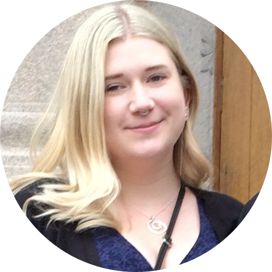

|  |
Anna BrandinÄr noggrann, ansvarsfull och söker nästa utmaning. |
| sep 2018 - jun 2019 | Infogruppen Göta studentkår, Göteborg Arvoderad av Göta studentkår för att sätta upp affischer på campus, vanligtvis en gång per vecka. |
| nov 2017 - maj 2019 | Projektmedarbetare Sahlgrenska Universitetssjukhuset, Göteborg Timanställning inom projektet MatAppen, där syftet är att ge patienter möjlighet att beställa sina måltider själva på sjukhuset. Jag har inom projektet varit delaktig i bland annat kravställande för funktionerna och riskanalys. |
| sep 2017 - dec 2017 | Forskningsassistent Högskolan i Skövde, Skövde Deltid inom projektet Design, textil och hållbar utveckling, som en följd av att ha skrivit kandidatarbete inom ramen för projektet. Huvudsakliga arbetsuppgifter har varit dataanalys i form av videoannotering. |
| jun 2017 - aug 2017 | Trainee eHälsostrategiska avdelningen, Sahlgrenska Universitetssjukhuset, Göteborg Traineetjänst som blev ett resultat av att deltagit i och vunnit Hack for health 2017. Hack for health var ett initiativ IT‑studenter tillsammans med anställda inom Sahlgrenska ägnade blev indelade i olika grupper med fokus på att lösa varsitt problem, detta under ett endygns‑hackaton. Min grupp arbetade med en applikation där patienten kan beställa sin måltid själva när de ligger på sjukhus, och presenterades som vinnare på Vitalis‑mässan våren 2017. |
| sep 2016 - jun 2017 | Infogruppen Göta studentkår, Göteborg Arvoderad av Göta studentkår för att sätta upp affischer på campus, vanligtvis en gång per vecka. Har också varit studentrepresentant i olika grupper för kårens räkning, bland annat Utbildningsrådet och Lärarförslagsnämnden vilket för min del har inneburit att delta på dessa gruppers möten. |
| okt 2015 - aug 2016 | Marknadsundersökare Ipsos Observer, Göteborg/distans Arbetet har dels innefattat att göra marknadsundersökningar via telefon men även att samla in mailaddresser från besökare på olika event för att uppdragsgivaren senare ska ha möjlighet att skicka ut enkäter. Har jobbat vid behov |
| apr 2015 - jun 2017 | Samplare Backup Event, Göteborg Arbetet har innefattat att dela ut tidningar, flyers och produkter i marknadsföringssyfte. Har jobbat vid behov. |
| sep 2017 - jun 2019 | Masterexamen i Digital Leadership 120 hp, Göteborgs universitet, Göteborg Ett masterprogram som ökar förståelsen för hur samhället förändras till följd av digitalisering och hur individer och organisationer behöver förändra sina strategier utifrån det. Kurser: Digital infrastruktur, Innovation och entreprenörskap i det digitala samhället, Innovationsstrategi i det digitala industrisamhället, Organisering för digital omvandling, Science and Research Methodology, Masteruppsats i informatik. |
| sep 2014 - jun 2017 | Kandidatexamen i kognitionsvetenskap 180 hp, Göteborgs universitet, Göteborg Ett tvärvetenskapligt program med fokus på hur människor, andra biologiska varelser och smarta maskiner bearbetar och använder information. Kurser: Introduktion till kognitionsvetenskap 1, Introduktion till kognitionsvetenskap 2, Artificiell intelligens och mänskligt tänkande, Big data och framtidens beslutsfattande, Evolutionär psykologi, Kognitionsvetenskapliga problem och teorier, Kognitiva perspektiv på människa‑teknikinteraktion, Lärande och minne, Maskininlärning, kognition och beslutsfattande, Metod 1, Metod 2 och projekt, Multimodal interaktion, Neurokognition, Programmeringsverktyg för kognitionsvetare, Retorik och inflytandets kognition, Social kognition, Språk, kommunikation och tänkande, Kandidatuppsats i kognitionsvetenskap. |
| Kattklappare | ⭐⭐⭐⭐⭐ | Salta maten lagom | ⭐ |
| Övertänkande | ⭐⭐⭐⭐⭐ | Ordskämt | ⭐⭐⭐⭐ |